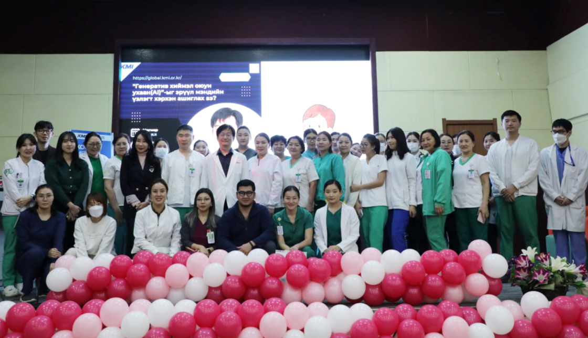
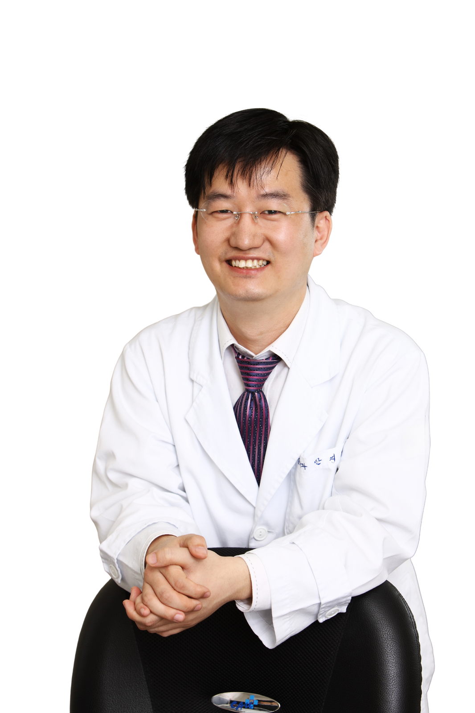
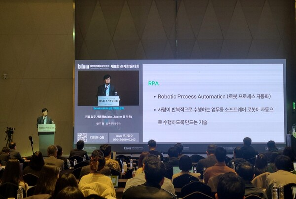

내과 전문의 · Jihyun Ahn, MD, PhD
내과 전문의·의학박사. 내분비대사·검진의학·노인의학을 바탕으로 의료 AI와 의학 교육, 쉬운 건강 커뮤니케이션을 연구합니다.
KMI 한국의학연구소

안지현은 KMI 한국의학연구소의 내과 전문의이자 의학박사입니다. 중앙대학교병원 내분비내과 교수를 지냈고, 건강검진 빅데이터와 생성형 AI의 의료 활용, AI 기반 의학 교육을 연구합니다. 언론학 석사로서 의학 정보를 누구나 이해할 수 있는 언어로 전하는 일을 30여 권의 저서, 칼럼, 유튜브 「쉬운건강」으로 이어 왔습니다.
소속 표기: Department of Internal Medicine, Korea Medical Institute
의학 전문서와 대중서를 포함해 30여 권을 집필했습니다.
학회 활동과 학술 네트워크

학회·의사회·대학·해외 병원의 의료진을 대상으로 생성형 AI 활용 강의를 이어 왔습니다.
안지현(Jihyun Ahn)은 KMI 한국의학연구소의 내과 전문의이자 의학박사입니다. 중앙대학교병원 내분비내과 교수를 지냈으며, 의료 AI와 건강검진 빅데이터, AI 기반 의학 교육을 연구합니다.
내과와 내분비대사(당뇨병·이상지질혈증·갑상선), 건강검진, 노인의학, 심초음파가 전문 분야이며, 생성형 AI의 진료·교육 활용을 연구합니다.
내과 전문의, 의학박사, 내분비대사 분과 세부전문의이며 검진의학·노인의학·심초음파 인증의입니다.
Application of Generative Artificial Intelligence in Dyslipidemia Care(J Lipid Atheroscler 2025), 생성형 AI 의학 교육 리뷰(Ewha Med J 2025), 의사국가시험 문항 프롬프트 엔지니어링 리뷰(JEEHP 2025), 갑상선학 분야 생성형 AI 리뷰(Int J Thyroidol 2025) 등이 있습니다.
『AI와 의학 교육』(2026), 『건강검진 사용 설명서』, 『한눈에 알 수 있는 내과학』 등 30여 권을 집필했습니다.
유튜브 채널 「쉬운건강」(@easyhealth365)과 인벤터스의 「안지현 내과 전문의」 연재 칼럼에서 볼 수 있습니다.